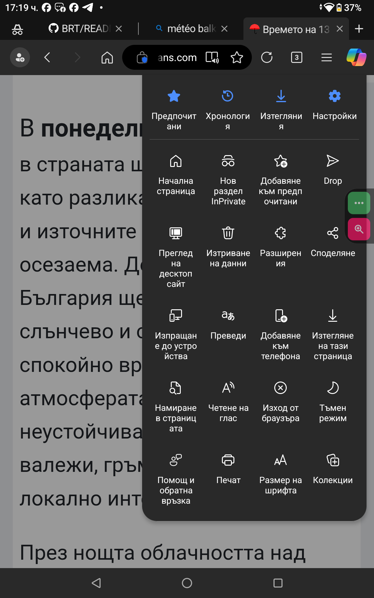
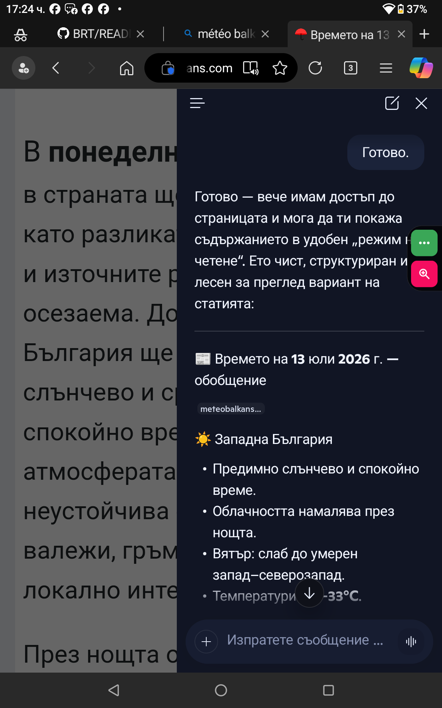

Browser Reader Mode Compatibility Test (BRT)
Verify browser accessibility features and evaluate the reading experience of the same website across different browsers.
| Device | Operating System |
|---|---|
| OUKITEL RT8 | Android 14 |
| Blackview Tab 10 | Android 11 |
| Browser | Feature Tested |
|---|---|
| Google Chrome | Reader Mode |
| Mozilla Firefox | Reader View |
| Microsoft Edge | Accessibility features |
| Browser | Reader Feature | Result |
|---|---|---|
| Google Chrome | Reader Mode available | PASS |
| Mozilla Firefox | Reader View available | PASS / LIMITED |
| Microsoft Edge | Immersive Reader unavailable | PARTIAL |
Microsoft Copilot was detected during testing.
Copilot is an AI assistant and is not a Reader Mode feature.
Conclusion:
AI assistance ≠ browser accessibility.



| Parameter | Value |
|---|---|
| Status | Completed |
| Date Tested | 13 July 2026 |
| Tester | Veselin Ignatov |
|
The source code and documentation are available on 👇
Изходният код и документацията са достъпни в GitHub. Project README |
BRT evaluates native browser accessibility features.
Microsoft Edge did not provide a native Reader Mode / Immersive Reader option for this page.
AI assistants are documented separately and are not considered Reader Mode replacements.
Test Result: Reader Mode: Not available for this page ❌
Test Completed Successfully ✅